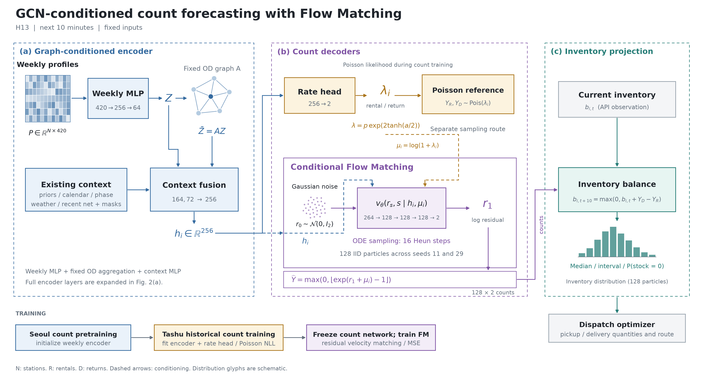
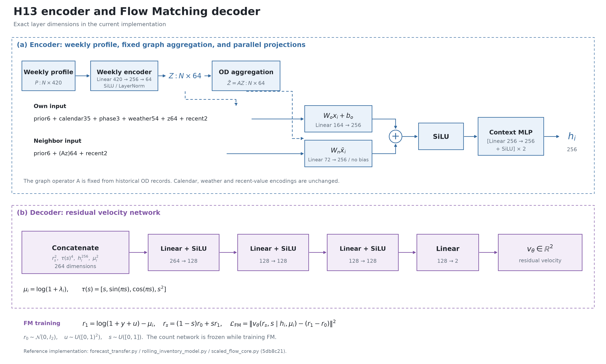

MODEL ARCHITECTURE / V1
타슈 수요·재고 예측 모델
과거 대여·반납 표현을 만들고, 다음 10분의 건수를 생성해 재고로 바꾼다.
입력 특징 고정10분 예측GCN · 포아송 · Flow Matching


기준 모델을 불러오고 있습니다.
주간 프로필 encoder420 → 64
조건 표현 h256차원
건수 출력대여 · 반납
생성 표본 / 적분128 / 16단계
INFERENCE
대여소 표현에서 재고 분포까지
단계를 누르면 층과 입출력이 표시된다.
재배치 계산기는 이 재고 표본을 받아 공급 수량과 방문 순서를 정한다. 차량 동선은 신경망 decoder 밖에서 계산한다.
TRAINING
학습은 순서대로 진행한다
- 주간 encoder 초기화과거 서울 대여·반납 예측으로 사전학습한 표현 사용
- GCN · 평균 head 학습타슈 과거 거래로 학습, 2월 기록으로 선택
- 예측망 고정 · FM 학습로그 건수 잔차의 속도장을 학습
- 잠금 후 외부 평가API 당시 입력과 다음 관측 정답을 분리
FIXED INPUTS
이번 버전의 범위
과거 주간 프로필·OD, 기존 달력·기상, 최근 순변화·결측 표현을 유지한다.
버스·철도·추가 기상·추가 도시·LLM을 예측 입력에 넣는 작업은 보류한다.
현재 encoder는 주간 MLP + 한 번의 OD 집계 + 현재 조건 MLP다. Transformer·GRU를 사용한 시계열 encoder로 표시하지 않는다.
IMPLEMENTATION STATUS
확인 범위
기존 코드와 H13·H22의 공개 실행 기록을 대조했다. 새 학습이나 새 정확도 평가는 수행하지 않았다.
SSH 확인 기록 불러오는 중접속 확인 기록 ↗
명세 파일을 불러오지 못했습니다. HTTP 서버에서 페이지를 열어주세요.